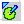
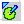
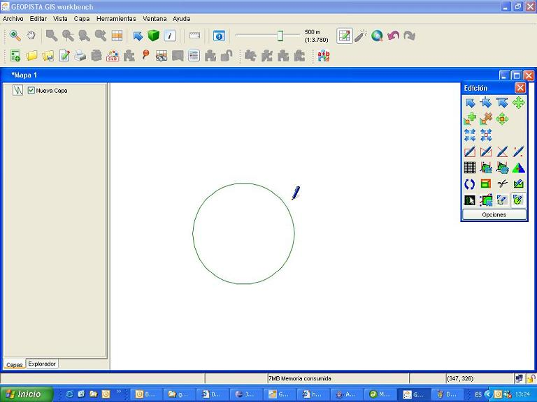

Esta opción estará accesible para todos los usuarios del editor GIS.
Esta herramienta permite dibujar círculos. Consta de un único botón dentro del panel de herramientas de edición  , con el siguiente aspecto: 
, con el siguiente aspecto: 
Esta opción estará accesible para todos los usuarios del editor GIS.
Hay dos maneras de dibujar un círculo con esta herramienta:

